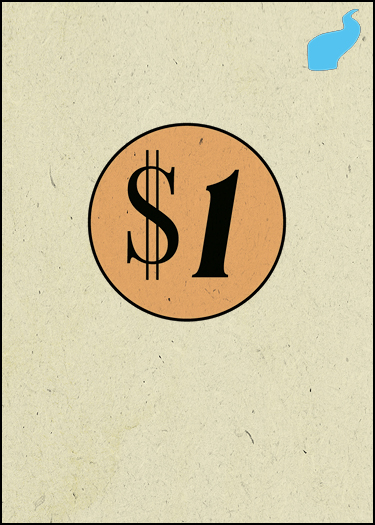
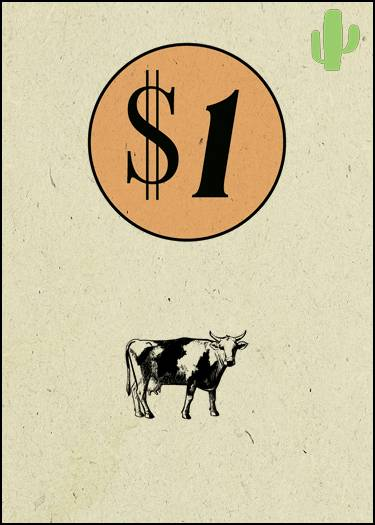
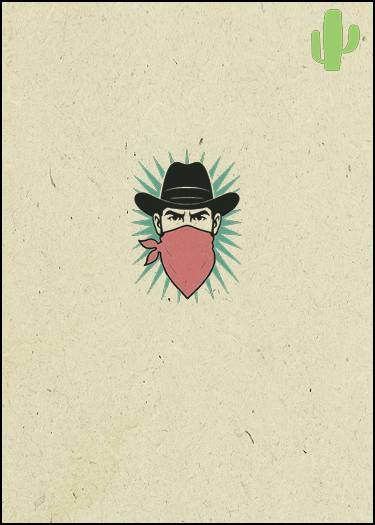
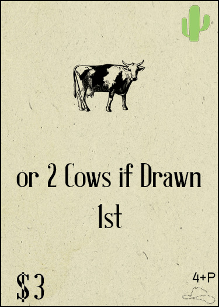
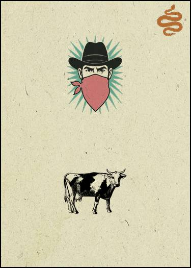
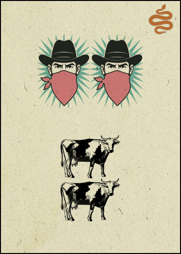
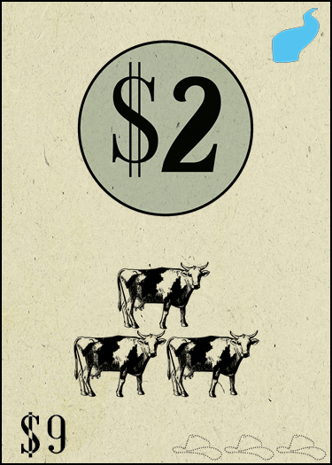
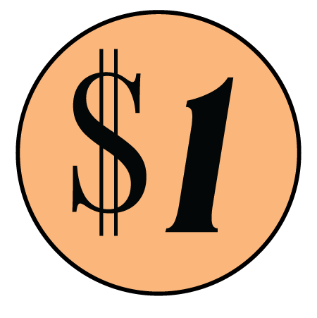

Cards for Cowboys
A push-your-luck deck builder
Build the biggest Herd of Cows.
Every player starts with these 10









Reading the Cards
Every card is laid out the same way. Four places to look:

1 2 3 4- Suit — top-right. Shows on the back too, so you know the risk before you draw.
- What it does — the middle. Any mix of $, Cows, Bandits, Jail or an Explosive.
- Cost — bottom-left. What you pay to buy it. Always a plain $, never in a circle.
- Act — bottom-right. Hats. Only used when you build the Store.
Starter cards have no cost and no hats — both bottom corners are empty. That's how you tell your 10 starters from the Store cards.
Suits & Symbols
 River
RiverSafe. No Bandits.
 Cactus
CactusUp to 1 Bandit.
 Rattlesnake
Rattlesnake1–2 Bandits, best rewards.
What the middle can hold

$
Money to spend this round.

Cow
Goes to your Herd.

Bandit
3rd in a round busts you.

Double Bandit
Counts as 2.

Jail
Cancels 1 Bandit.

Explosive
One-time use, on your turn.
Setup
- Each player takes an identical 10-card starter deck. Shuffle it face-down as your draw pile.
- Split the 54 Store cards into three Act decks by the hats (18 per Act). Shuffle each separately. 5–8 players shuffle two copies of each Act together.
- Build the Store once, face-down, back to front: Act 3 back, Act 2 middle, Act 1 front. Each Act is 2 rows (2–4 players) or 3 rows (5–8).
- Stagger every other row by half a card, so two cards cover the one above. Flip the front row face-up.
| Players | Per row | Rows | Per Act | Total |
|---|---|---|---|---|
| 2 | 5 | 6 | 10 | 30 |
| 3 | 7 | 6 | 14 | 42 |
| 4 | 9 | 6 | 18 | 54 |
| 5 | 8 | 9 | 24 | 72 |
| 6 | 9 | 9 | 27 | 81 |
| 7 | 10 | 9 | 30 | 90 |
| 8 | 11 | 9 | 33 | 99 |